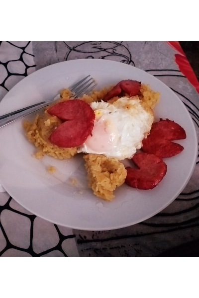

Mangu

Description
Mangu is delicious plate from my birth country Dominican Republic
If you really love to taste food this a plate that can't be out of
of your wishlist.
Ingredients
- 3 green plantains
- 1 quart water
- 1/4 cup olive oil
- 1 cup sliced white onion
- 1 1/2 tablespoons salt
- 1 cup sliced Anaheim peppers
Steps
Step 1
- Place the plantains and water in a saucepan. Bring to a boil, and cook 20 minutes, until plantains are tender but slightly firm. Drain, reserving 1 cup of the liquid. Cool plantains, and peel.
Step 2
-
Heat the olive oil in a skillet over medium heat, and saute the onion until tender.
Step 3
-
In a bowl, mash the plantains with the reserved liquid and salt. Transfer to a food processor, mix in the peppers, and puree. Serve the pureed plantain mixture topped with the onions.